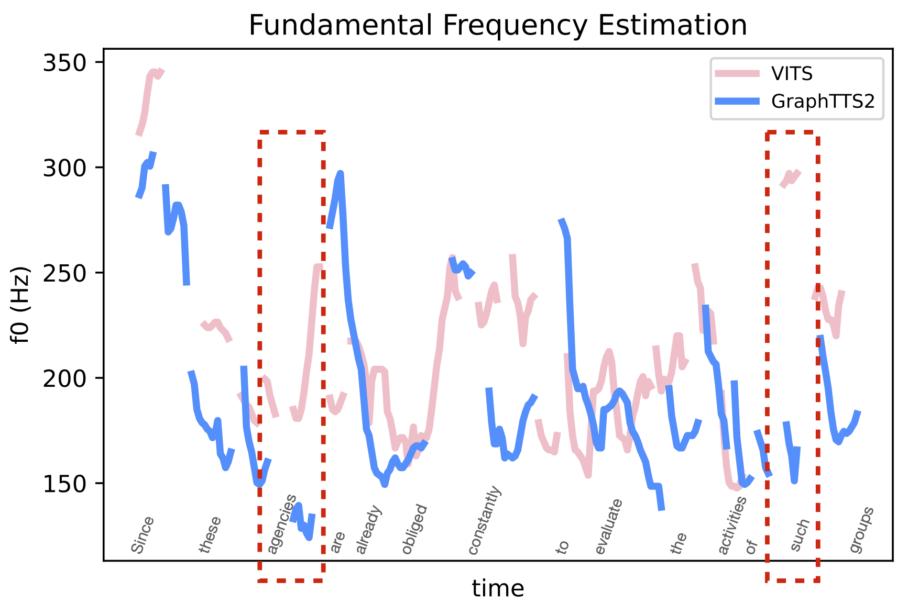
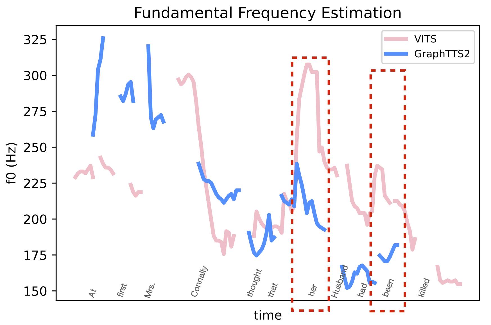
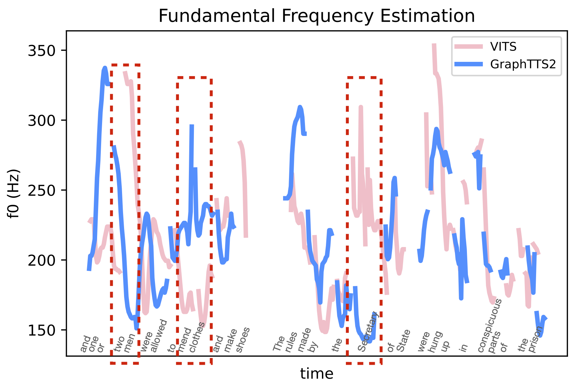

This paper integrates graph-to-sequence into an end-to-end text-to-speech framework for syntax-aware modelling with syntactic information of input text. Specifically, the input text is parsed by a dependency parsing module to form a syntactic graph. The syntactic graph is then encoded by a graph encoder to extract the syntactic hidden information, which is concatenated with phoneme embedding and input to the alignment and flow-based decoding modules to generate the raw audio waveform. The model is experimented on two languages, English and Mandarin, using single-speaker, few samples of target speakers, and multi-speaker datasets, respectively. Experimental results show better prosodic consistency performance between input text and generated audio, and also get higher scores in the subjective prosodic evaluation, and shows ability of voice conversion. Besides, the efficiency of the model is largely boosted through the design of the AI chip operator, which achieves 5x acceleration than the benchmark model.
" Since these agencies are already obliged constantly to evaluate the activities of such groups, "
" At first Mrs. Connally thought that her husband had been killed. "
" and one or two men were allowed to mend clothes and make shoes. The rules made by the Secretary of State were hung up in conspicuous parts of the prison; "



It can be seen from the red dashed box in the figures, that VITS sometimes randomly generates accented audio clips, with no relation with the actual speech syntax. For example, "such" in the first sentence does not have the meaning of stress, but VITS assigns obvious stress to this word, which is inconsistent with the syntactic information of the text. This random stress situation is resolved in this paper by FastGraphTTS.